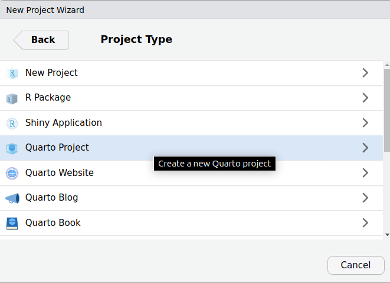
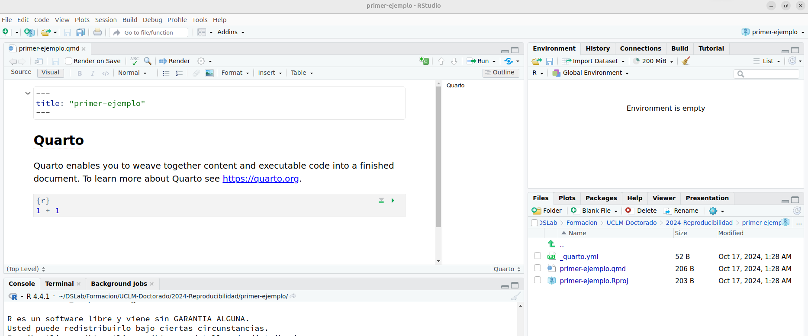
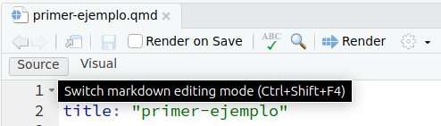
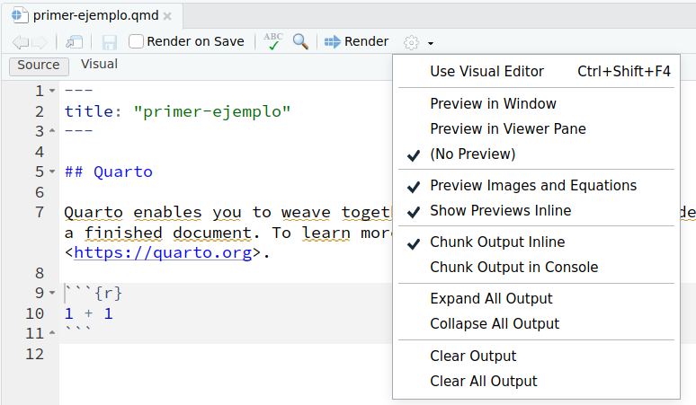
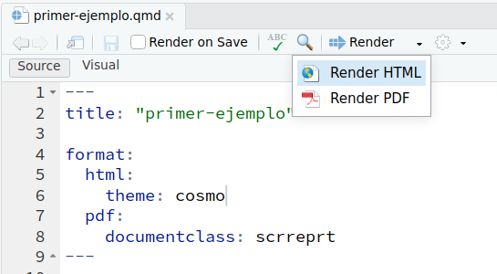
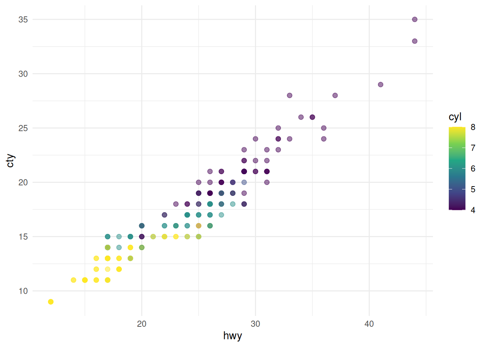
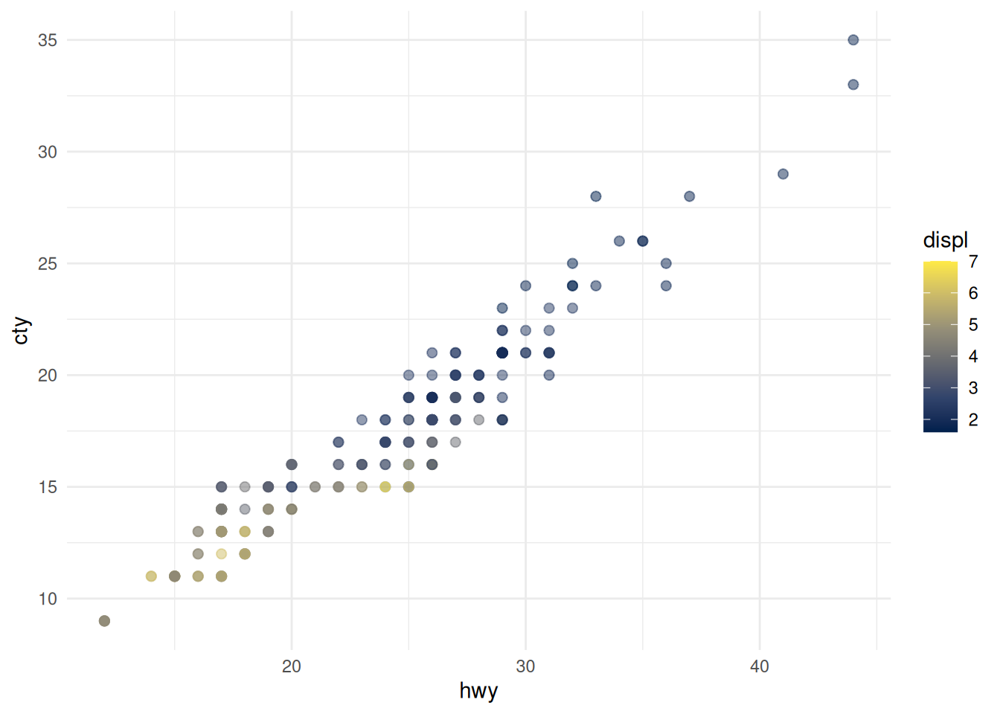
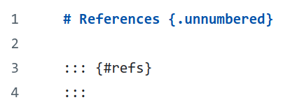

install.packages("tidyverse")
install.packages("palmerpenguins")
install.packages("quarto")4 Documentos individuales
La manera más sencilla de comenzar a utilizar Quarto es crear documentos individuales. Se trata de documentos autocontenidos, que incorporan texto formateado y código ejecutable en un único archivo.
Para crear un documento nuevo con Quarto, simplemente podemos usar las opciones del menu de RStudio o MS Visual Code, o bien crear un archivo con extensión .qmd.
4.1 Creación del documento con RStudio
Antes de empezar, comprueba que has instalado el software Quarto en tu máquina. Es un programa software independiente, que tiene que estar instalado para que el resto del proceso funcione (consulta la sección Sección 1.4).
Si ya tenemos instalada una versión reciente de RStudio, necesitaremos instalar los siguientes paquetes para el ejemplo:
Ahora, en RStudio creamos un nuevo proyecto eligiendo la opción Quarto project, tal y como aparece en la Figura 4.1.

Podemos nombrar el directorio de nuestro proyecto como primer-ejemplo y pulsamos Create Project.
Como resultado, nos debe aparecer un nuevo proyecto abierto en pantalla, con el aspecto que se muestra en la Figura 4.2.

En concreto, en el panel superior izquierdo podemos comprobar que, por defecto se ha abierto el editor Visual, que permite crear documentos Quarto de forma más intuitiva. Sin embargo, para empezar a familiarizarnos desde el principio con la estructura de un documento en quarto vamos a cambiar al editor Source para ver el código fuente, pulsando en el botón que se muestra en la figura Figura 4.3.

4.2 Estructura del documento
La estructura de un documento individual en Quarto es esta.
---
title: "Mi primer documento"
author: John Doe
date: 2024-10-24
---
Aquí tenemos algo de contenido en formato **Markdown**.
```{r}
#| label: Etiqueta
1 + 1
```
Contenido *adicional* en Markdown.El contenido del archivo consta de dos partes:
Preámbulo: está delimitado por dos marcas
---. Dentro de esta área podemos asignar valores a opciones de configuración para maquetar y crear el documento, tales como el título, autor/es, fecha, etc. También podemos configurar diversas opciones relacionadas con el formato de salida de los documentos.Cuerpo del documento: se compone de párrafos de texto formateados utilizando la sintaxis de marcado Markdown, que veremos después. Además, también se pueden intercalar en el texto fragmentos de código ejecutable o chunks, que se marcan siguiendo una sintaxis especial (como vemos en el ejemplo anterior).
Cada chunk de código ejecutable está delimitado de la siguiente manera
```{r}
# Código en R
```
Soporte para otros lenguajes de programación
Aunque en este taller nos centramos en el lenguaje R, debemos sabes que Quarto también soporta otros lenguajes de programación como Python, Julia u Observable.
Podemos cambiar el lenguaje de programación de cada chunk indicando su nombre al comienzo, como por ejemplo:
```{pyton}
# Código en Python
```Sin embargo, para que pueda funcionar necesitaremos realizar algunas tareas adicionales de configuración.
4.2.1 El preámbulo
Un ejemplo básico de preámbulo es el siguiente (aunque bastaría con proporcionar únicamente un título para el documento):
---
title: "Mi primer documento"
author: John Doe
date: 2024-10-24
---Por supuesto, se pueden ir añadiendo muchas más opciones que iremos explicando a lo largo de este capítulo.
4.2.2 Listado de opciones
Existe un extenso listado de opciones de configuración que podemos incluir en nuestros documentos.
Opciones para salida HTML: permiten configurar diversos aspectos básicos del documento, tales como el título y subtítulo, fecha, autor (o lista de autores), resumen o DOI; opciones de formato como el tema o estilos avanzados para contenido HTML con CSS; numeración y tabla de contenidos, etc.
Opciones para salida PDF: ofrecen la posibilidad de configurar múltiples parámetros para la creación del documento en este formato, muchas de ellas similares a las de la salida en HTML. Una opción particularmente relevante es elegir el formato de documento LaTeX (opción
documentclass), que define el aspecto general de la maquetación que se va a emplear. Por defecto, se emplean clases del metapaquete KOMA Script, comoscrartcloscrbook. También es importante indicar la opciónpapersize, en nuestro caso para garantizar que se usa un formato estándar como el A4. El formato de las citas también es relevante, pudiendo elegir, por ejemplo, el motor BibLaTeX que es más potente, con soporte multilenguaje y para codificación de caracteres UTF-8 nativa. Por último, también es importante indicar el motor de compilación. Si queremos una flexibilidad total en la maquetación del documento, se recomienda encarecidamente usar el motor XeLaTeX (opciónpdf-engine: xelatex), que es el valor por defecto que utiliza Quarto.
4.2.3 Sintaxis Markdown básica
En el siguiente enlace puedes encontrar un rápido tutorial básico que muestra las opciones básicas de la sintaxis Markdown aceptada en documentos Quarto para formatear el contenido textual.
4.3 Creación del documento (output)
Por defecto, si no indicamos nada Quarto generará un solo formato de salida del documento en HTML. Sin embargo, es posible definir más de un formato de salida incluyendo más opciones de configuración. Por supuesto, se pueden indicar diferentes opciones para generar varios formatos de salida simultáneamente, o bien para elegir el formato de salida que queremos producir en función de nuestros intereses, seleccionando el formato que necesitamos al previsualizar o al generar el documento definitivo.
4.3.1 Previsualización
Para previsualizar el documento tenemos que pulsar el botón Render en el menú de herramientas de la interfaz de RStudio, tal y como se muestra en la Figura 4.4.
Por defecto, lo normal es que se abra nuestro navegador web principal o un panel en la interfaz de RStudio mostrando la página HTML con el documento ya generado. Pulsando sobre el icono con un engranaje junto al botón Render se puede seleccionar, entre otros aspectos, el tipo de previsualización que queremos que se lance tras completar la creación del documento o desactivar por completo dicha previsualización. La opciones disponibles se muestran en la Figura 4.5

4.3.2 Seleccionar el tipo de documento
Cuando tenemos varias opciones de formato de salida configuradas en nuestro documento, podemos elegir en tiempo de previsualización cuál de los formatos se elige para generar el documento. En la Figura 4.6 se puede observar un ejemplo de documento que incluye configuración para dos formatos de salida (HTML y PDF) y el cambio en el botón Render, en el que ahora aparece una pequeña flecha negra justo a la derecha del icono del botón para desplegar las dos opciones de salida disponibles.

4.3.3 Opciones básicas de configuración
A continuación, se presenta un ejemplo de algunas opciones básicas de configuración que suelen ser habituales en documentos con formato de salida HTML.
---
title: "Mi primer documento"
author:
- "John Doe"
- "Mary Jane"
date: 2024-10-24
lang: es
bibliography: references.bib
format:
html:
theme: cosmo
toc: true
number-sections: true
html-math-method: katex
css: styles.css
pdf:
documentclass: scrreprt
---
RESTO DEL DOCUMENTOEn este ejemplo se indica, además del autor y la fecha, una lista de dos autores, el lenguaje principal del documento (español), el archivo de referencias de bibliografía (en formato .bib) y ya dentro de las opciones HTML, el tema de maquetación, la inclusión de una tabla de contenidos (por defecto situada en la parte superior derecha), numeración de secciones, selección del motor para renderizar ecuaciones en el documento y un archivo de estilos personalizados en formato CSS para ajustar algunas opciones finas de maquetación.
Una opción que conviene destacar es la de forzar a que todos los recursos (imágenes, información de estilos, etc.) estén integrados en el propio archivo HTML, para facilitar la compartición o publicación directa del documento sin necesidad de aportar también los archivos auxiliares necesarios para mostrarlo en el navegador. Esta opción se muestra a continuación:
format:
html:
embed-resources: true4.4 Chunks de código ejecutable
La característica más diferencial de los documentos creados con Quarto es la posibilidad de intercalar fragmentos de código ejecutable, llamadas chunks en el propio documento. Esto incluye también la opción de que dicho código genere diferentes resultados (numéricos, gráficos, tablas, animaciones, etc.) que se integren directamente en el documento. De este modo, si mantenemos actualizado el código siempre se generarán las versiones correcgtas de dichos resultados.
Los fragmentos de código ejecutable tienen la siguiente estructura:
```{r}
#| label: id-fragmento
# Aquí va el código ejecutable
a = c(1, 2, 3, 4)
b = a^2
```La tripleta de caracteres ``` se denomina fence y delimita el comienzo y el final del fragmento de código. Justo a continuación del delimitador de apertura se escribe entre llaves el identificador del lenguaje de programación en el que está escrito el código de ese fragmento. Esa información se usa para elegir el resaltado de sintaxis apropiado para mostrar el código de ese lenguaje y para seleccionar el intérprete que ejecuta el código y produce los resultados.
En las siguientes líneas podemos incluir una o varias opciones de configuración específicas para ese fragmento de código, mediante la sintaxis #| opcion: valor. Por ejemplo, en el fragmento anterior la opción #| label: id-fragmento crea una etiqueta (que debe ser unívoca) para identificar a ese fragmento de código dentro del documento.
Algunas opciones de uso frecuente son:
eval: true | false | [...]: Indica si se debe evaluar (ejecutar) el contenido de ese fragmento. Se puede pasar una lista de números de línea positivos o negativos para seleccionar explícitamente qué líneas de código se incluyen (positivos) o excluyen (negativos) de la ejecución.echo: true | false | fenced | [...]: Indica si se debe incluir el código fuente del fragmento en el documento o no. La opciónfencedincluye también el delimitador de celda como parte de la salida. Por último, también acepta una lista de números de línea positivos o negativos para seleccionar qué líneas de código se mostrarán o no en el fragmento.output: true | false | asis: Para decidir si el resultado de la ejecución del código se incluye o no en el documento. El valorasisfuerza a que el resultado se trate como contenido Markdown en crudo.warning: true | false: Indica si se deben incluir los mensajes de aviso en la salida.error: true | false: Marca si los mensajes de error generados se incluyen en la salida.message: true | false: Indica si los mensajes de información generados se incluyen en la salida.
Cuando los fragmentos generan figuras, estas se insertan dentro del propio documento. Veamos un ejemplo:
```{r}
#| label: fig-example-cars
#| fig-cap: "Gráfico de correlación lineal positiva entre el kilometraje en ciudad y en carretera de diferentes modelos de coches."
library(ggplot2)
#| label: scatterplot
#| echo: true
ggplot(mpg, aes(x = hwy, y = cty, color = cyl)) +
geom_point(alpha = 0.5, size = 2) +
scale_color_viridis_c() +
theme_minimal()
```
Numeración automática de figuras
Es importante que el identificador de fragmento que elegimos para código que genera una o varias figuras comience por el prefijo fig-. De ese modo, nos aseguramos de que Quarto le asigne automáticamente una numeración a la figura generada y que podamos crear referencias cruzadas (enlaces internos) a dicha figura en nuestro documento.
Como veremos más adelante, otros tipos de salida como las tablas también necesitan que se les asigne un patrón concreto en su identificador de fragmento para que se numeren de forma automática y se puedan referenciar dentro del documento.
La gestión de figuras en Quarto es bastante sofisticada, hasta el punto de que se pueden organizar de forma sencilla varias subfiguras con sus respectivas descripciones individuales, como se muestra en el siguiente ejemplo usando algunas opciones adiconales.
```{r}
#| label: fig-mpg-subplot
#| fig-cap: "Kilometraje en ciudad y en carretera de 38 modelos populares de coches."
#|
#| fig-subcap:
#| - "Color por núm. de cilindros."
#| - "Color por cubicaje del motor, en litros."
#| layout-ncol: 1
ggplot(mpg, aes(x = hwy, y = cty, color = cyl)) +
geom_point(alpha = 0.5, size = 2) +
scale_color_viridis_c() +
theme_minimal()
ggplot(mpg, aes(x = hwy, y = cty, color = displ)) +
geom_point(alpha = 0.5, size = 2) +
scale_color_viridis_c(option = "E") +
theme_minimal()
```


Algunas opciones frecuentes para chunks que generan figuras son:
fig-width: Ancho de la figura.fig-height: Alto de la figura.fig-cap: String entre comillas que se insertará como descripción al pie de la figura (caption).fig-alt: Mensaje de texto alternativo que rellena el atributoaltde la imagen HTML (por ejemplo, para mejorar la accesibilidad del contenido).fig-dpi: Ajuste de la resolución de la figura (en puntos por pulgada).
El tutorial sobre fragmentos de código ejecutables de la documentación oficial presenta más información y ejemplos sobre cómo utilizar esta potente característica de Quarto.l
4.5 Herramientas para el autor
Además de la capacidad de integrar código ejecutable y sus resultados en nuestros documentos científicos, Quarto incluye un buen número de recursos y herramientas para ofrecer una experiencia de autoría completa y eficiente.
4.5.1 Secciones del documento
Como ya vimos en el ejemplo de la Sección 4.3.3, existen dos opciones de configuración del documento HTML que nos permiten numerar las secciones e incorporar una tabla de contenidos generada automáticamente en la parte superior derecha de nuestro documento.
format:
html:
toc: true
number-sections: trueUn funcionalidad importante para la creación de documentación científica es poder incluir referencias cruzadas, es decir, enlaces que nos lleven a otras secciones del documento. En Quarto esto se consigue siguiendo un sencillo procedimiento en dos pasos:
- Añadimos una etiqueta única para identificar la sección con la sintaxis:
## Título de sección {#sec-etiqueta}- Referenciamos en otro lugar del texto la etiqueta que hemos creado para esa sección, de forma que Quarto crea automáticamente el enlace (referencia cruzada) a dicha sección:
En el texto añadimos una referencia a la @sec-etiquetaSe puede ver un ejemplo de este tipo de referencias cruzadas creadas de forma automática al comienzo de esta misma sección. Por el contrario, si queremos que una sección del documento se excluya del esquema de numeración del resto de secciones, usamos en el título de esa sección la etiqueta especial:
## Sección no numerada {.unnumbered}Existen varias opciones adicionales que controlan la forma y estilo con que se crean y numeran las secciones. Algunas de ellas son:
anchor-sections: Hace que se muestre un enlace de anclado (para enlazar directamente esa sección en otro documento) cuando se pasa el ratón por encima del título de una sección.toc-depth: Especifica cuántos niveles de profundidad en la numeración de secciones aparecen en la tabla de contenidos. Por defecto se muestran 3 niveles.toc-location: body | left | right | left-body | right-body: Controla la ubicación en la que aparece la tabla de contenidos en el documento.toc-title: Cadena de caracteres con el título de la tabla de contenidos.toc-expand: Indica si se deben expandir todas las secciones de la tabla de contenidos o deben quedar colapsadas para que el usuario vaya pulsando en las que quiera expandir.number-depth: Determina la profundidad máxima a la que se numeran las secciones del documento (cuidado, debería estar en consonancia con el valor asignado a la opcióntoc-depth).number-offset: Permite ajustar el número por el que se empiezan a numerar las secciones. Si queremos que el documento comience a numerar la sección de más alto nivel como “4” entonces usamosnumber-offset: 3. Si queremos que el documento empiece en una sección de nivel 2 con numeración “1.5” debemos especificarnumber-offset: [1,4]. Definir un valor para esta opción implica que automáticamentenumber-sections: true.
4.5.2 Ecuaciones
Otro aspecto esencial de los documentos científicos es la aparición de símbolos, fórmulas y ecuaciones matemáticas. Existen varias librerías para HTML que permiten mostrar las ecuanciones debidamente formateadas en pantalla. Por su parte, LaTeX, debido a sus orígenes, siempre ha incluído potentes y versátiles herramientas para manejar este tipo de contenido, por lo que el soporte está garantizado para documentos en PDF.
En general, la sintaxis empleada para escribir las ecuaciones es muy similar a la que se utiliza en LaTeX.
Existen dos maneras de mostrar las ecuaciones en nuestro contenido, siguiendo también una filosofía similar a la de los documentos LaTeX:
- Ecuaciones en línea con el texto: para mostrar la ecuación dentro de una línea o párrafo, a la misma altura que el resto del texto.
- Ecuaciones en modo display: la ecuación se muestra en un espacio aparte, entre dos párrafos de texto y con cierto margen de espacio en la zona superior e inferior.
Ejemplo de ecuación en línea: $F = m \cdot a$Que produce como resultado: ejemplo de ecuación en línea: \(F = m \cdot a\).
Ejemplo de ecuación en modo display:
$$E = mc^{2}$$Que genera el siguiente resultado (ver debajo cómo añadir la numeración):
\[ E = mc^{2} \tag{4.1}\]
Si además queremos numerar nuestras ecuaciones, hay que acordarse de emplear el patrón de etiqueta identificadora unívoca eq-etiqueta para identificarla y luego poder insertar referencias internas a dicha ecuación en el texto.
$$ E = mc^{2} $$ {#eq-energy}Como resultado, podemos insertar una a la Ecuación 4.1.
4.5.3 Tablas
Las tablas son otro contenido relevante que podemos formatear de diferentes maneras en los documentos generados con Quarto.
En este caso, el editor visual nos puede simplificar mucho esta tarea. Se aconseja probarlo para ver la diferencia, ya que es una herramienta muy intuitiva. Sin embargo, siguiendo la misma línea que el resto del taller, aquí vamos a describir los detalles para crear este contenido directamente en el código Markdown del archivo.
La forma más directa de crear una tabla en Markdown es componer una tabla pipe, así denominada porque su sintaxis se basa en el operador | de la línea de comandos. Veamos un ejemplo.
| Default | Left | Right | Center |
|---------|:-----|------:|:------:|
| 1 | 2 | 3 | 4 |
| 22 | 23 | 24 | 25 |
| 4 | 3 | 2 | 1 |El resultado de incluir el código anterior en nuestro documento es:
| Default | Left | Right | Center |
|---|---|---|---|
| 1 | 2 | 3 | 4 |
| 22 | 23 | 24 | 25 |
| 4 | 3 | 2 | 1 |
Podemos observar cómo la clave para controlar el alineamiento horizontal del contenido de la tabla es situar apropiadamente el símbolo : en la línea justo debajo de la línea de título, que separa este del cuerpo de la tabla. Si no queremos incluir título es obligatorio que incluyamos la primera línea, pero podemos dejar las celdas en blanco.
Debajo de la tabla podemos insertar la expresión : Caption de la tabla para incluir un mensaje descriptivo. También es posible utilizar directamente algunos elementos de estilo incluidos en las clases de Bootstrap, el entorno de estilo web que utiliza Quarto para componer las páginas (hemos visto antes cómo utilizar la opción de documento theme: cosmo para usar el tema Cosmo de Boostrap). Existen diferentes efectos, y uno de los más frecuentes es colorear en gris el fondo de las filas alternativamente así como resaltar la fila en la que está posada la flecha del ratón. Estos dos efectos son .striped y .hover, respectivamente.
| Default | Left | Right | Center |
|---------|:-----|------:|:------:|
| 1 | 2 | 3 | 4 |
| 22 | 23 | 24 | 25 |
| 4 | 3 | 2 | 1 |
: Caption de la tabla {.striped .hover}| Default | Left | Right | Center |
|---|---|---|---|
| 1 | 2 | 3 | 4 |
| 22 | 23 | 24 | 25 |
| 4 | 3 | 2 | 1 |
Por último, de forma análoga a lo que hacemos para referenciar internamente ecuaciones y figuras en nuestro documento, también podemos etiquetar las tablas utilizando el patrón #tbl-etiqueta para referenciarlo como @tbl-etiqueta que queda formateado así: Tabla 4.1.
| Default | Left | Right | Center |
|---------|:-----|------:|:------:|
| 1 | 2 | 3 | 4 |
| 22 | 23 | 24 | 25 |
| 4 | 3 | 2 | 1 |
: Caption de la tabla. {#tbl-etiqueta .striped .hover}| Default | Left | Right | Center |
|---|---|---|---|
| 1 | 2 | 3 | 4 |
| 22 | 23 | 24 | 25 |
| 4 | 3 | 2 | 1 |
El mismo patrón de etiqueta se debe emplear en la opción de identificación de chunks de código #| label: tbl-etiqueta si luego queremos referenciar la tabla generada por ese fragmento de código con una referencia cruzada.
Se pueden consultar más detalles sobre la creación de subtablas, cambio de ubicación del caption, así como la creación de tablas grid que usan una sintaxis diferente y permiten incluir elementos de bloque arbitrarios en cada celda (múltiples párrafos, bloques de código, listas no numeradas o numeradas, etc.).
+-----------+-----------+--------------------+
| Fruta | Precio | Ventajas |
+===========+===========+====================+
| Bananas | $1.34 | - envoltorio |
| | | - color brillante |
+-----------+-----------+--------------------+
| Oranges | $2.10 | - rica en vitam. C |
| | | - saborsa |
+-----------+-----------+--------------------+
: Sample grid table.| Fruta | Precio | Ventajas |
|---|---|---|
| Bananas | $1.34 |
|
| Oranges | $2.10 |
|
4.5.4 Llamadas
Es posible incluir bloques de llamadas de atención, para resaltar notas prácticas, advertencias o consejos de especial interés. Además, se suele poner un título a la llamada para hacerla aún más informativa.
::: {.callout-note}
## Título de la nota
Existen cinco tipos diferentes de llamaedas:
`note`, `tip`, `warning`, `caution`, e `important`.
:::
Título de la nota
Existen cinco tipos diferentes de llamaedas: note, tip, warning, caution, e important.
4.5.5 Citas bibliográficas
La gestión de referencias bibliográficas en Quarto se realiza codificando la información en formato BibTeX. Esto permite utilizar cualquiera de los formatos de citas bibliográficas soportados por este paquete, o bien incluir un fichero CLS que defina un formato estándar (APA, Chicago, IEEE, etc.).
Por ejemplo, las opciones de documento
---
title: "My Document"
bibliography: references.bib
csl: nature.csl
---indican un fichero references.bib donde podemos almacenar la información sobre las referencias bibliográficas (que podemos conseguir de Google Scholar, Zotero u otras herramientas y servicios en Internet), así como un fichero de estilo de citas nature.cls (estilo definido por la editorial Nature).
Dependiendo del estilo y formato de la cita, podemos utilizar una u otra sintaxis para indicar el autor y el año entre paréntesis, el autor fuera del paréntesis, números de página, capítulos, etc.
Por último, la lista ordenada de referencias bibliográficas (según los criterios de estilo de citas que hayamos seleccionado) deben aparecer al final del documento. Para conseguirlo en un documento HTML, debemos incluir un código especial, que normalmente se coloca en una sección independiente y no numerada, tal y como se muestra en la Figura 4.9.

Cuando la salida generada es en formato PDF y se usan los motores de gestión de referencias BibLaTeX o natbib, entonces la lista de referencias siempre aparece al final de documento y la etiqueta anterior se ignora. Finalmente, en el poco frecuente caso de que no queramos incluir ninguna referencia bibliográfica en nuestro documento podemos incluir en los metadatos de la cabecera del mismo la opción supress-bibliography: true.
4.5.6 Estilo general del documento
Hasta el momento, el documento de ejemplo que hemos mostrado así como estos mismos apuntes utilizan siempre un formato de estilo o theme del entorno de desarrollo web Bootstrap, llamado cosmo. No obstante, existe una amplia lista de temas alternativos para modificar el estilo general de nuestro documento (combinación de colores, tipografía y tamaño de fuentes, organización del contenido, aspecto de los enlaces, etc.). El proyecto Quarto se encarga de combinar regularmente los temas de estilo más populares para que estén disponibles como opción del documento.
En este directorio de temas en GitHub se puede comprobar una lista actualizada de los posibles valores que podemos asignar a la opción theme en la cabecera del documento. Es útil experimentar con diversas opciones para encontrar la que más se ajuste al tipo de documento generado, a su contenido y a la audiencia a la que va dirigido.
En la página web https://bootswatch.com/ se puede acceder a una demo en línea de muchos de los temas disponibles.